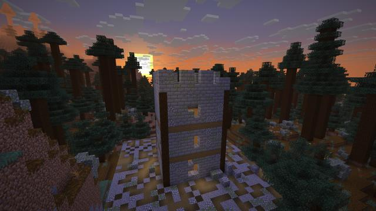
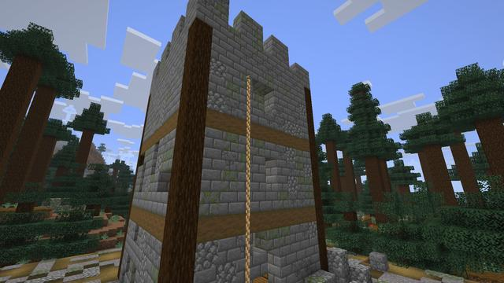
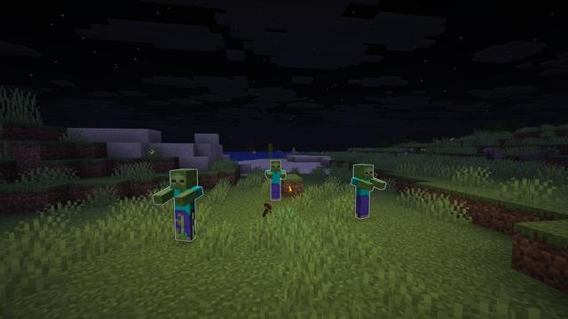
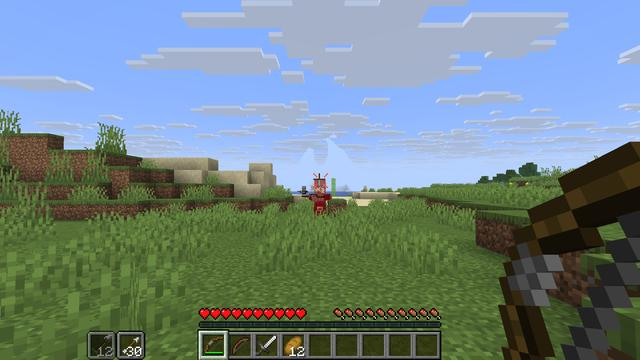
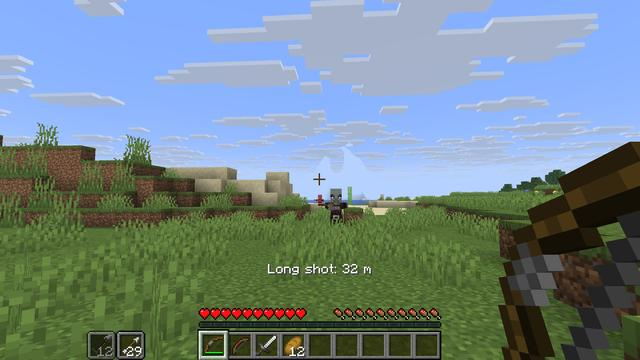
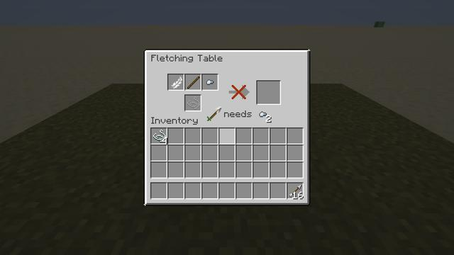
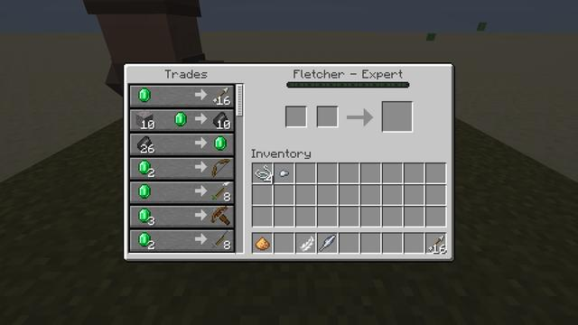

Screenshots
Showcase
Taken in game, with no shaders or texture packs. Menus are shown on a blurred view of the world.


A Ranger's Watchtower in the old pines at sunset The Marksman on its battlements
The Marksman on its battlements The watchtower over the taiga at dusk
The watchtower over the taiga at dusk

A Rope Arrow's rope down the watchtower's wall A Gale Harrier circling high over the windswept heights
A Gale Harrier circling high over the windswept heights A Bog Lurker's eyes in the swamp at nightfall
A Bog Lurker's eyes in the swamp at nightfall A Shieldbearer behind its tower shield, a pillager at its side
A Shieldbearer behind its tower shield, a pillager at its side

A Flare Arrow's light, and the zombies about it glowing At full draw on a pillager: the ring glows gold, let go now for a Perfect Release
At full draw on a pillager: the ring glows gold, let go now for a Perfect Release

A Perfect headshot on the pillager

A long shot: the distance on the action bar The Fletching Table: glowstone, a stick, a feather and a Harrier Feather make Flare Arrows
The Fletching Table: glowstone, a stick, a feather and a Harrier Feather make Flare Arrows

The table names the nearest arrow and the part it takes

A fletcher selling the new arrows beside the old trades